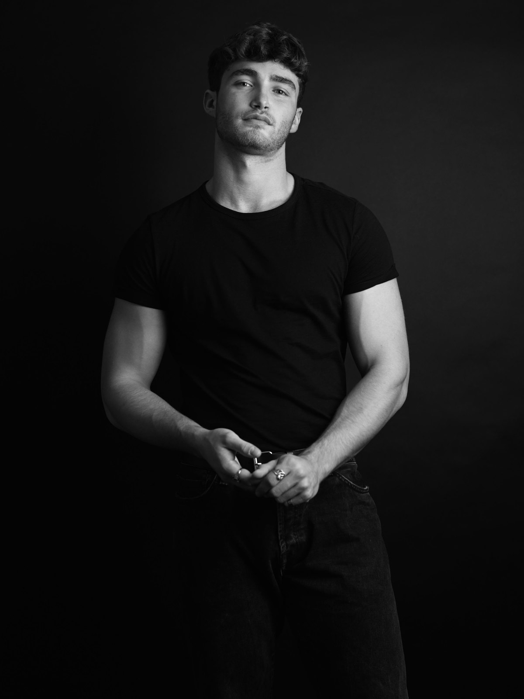
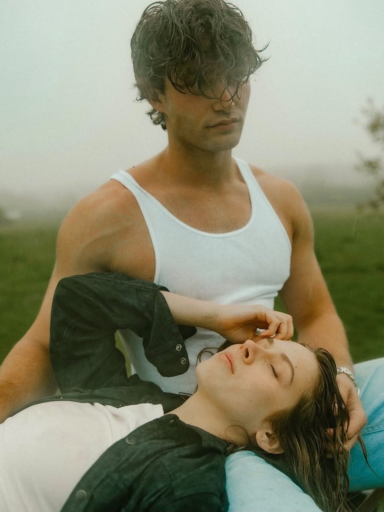
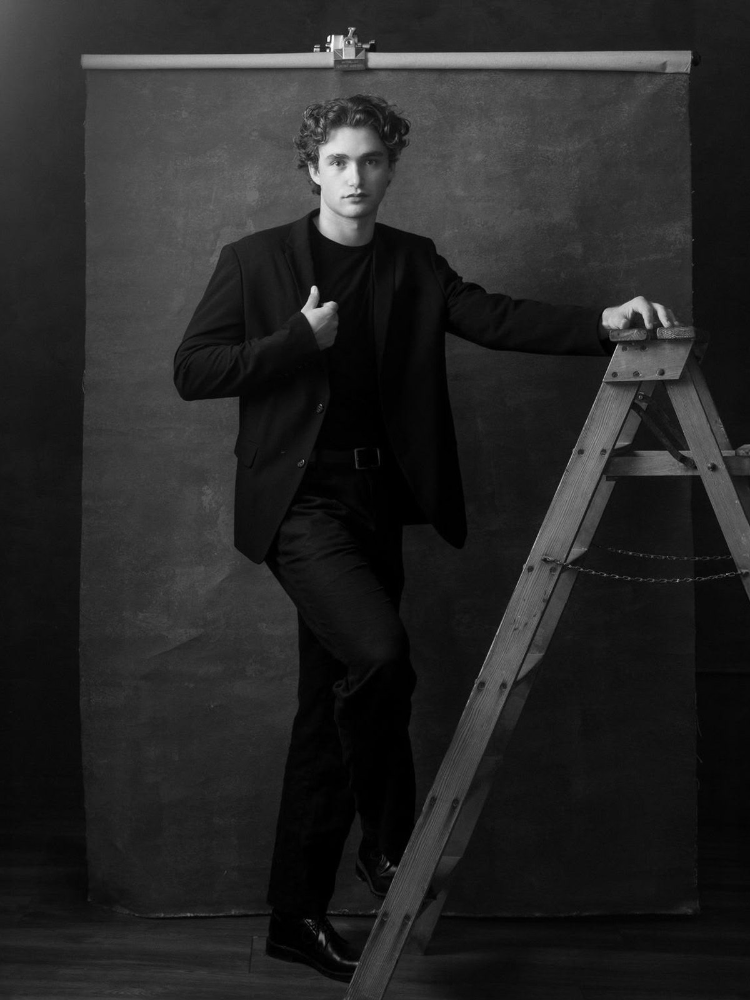
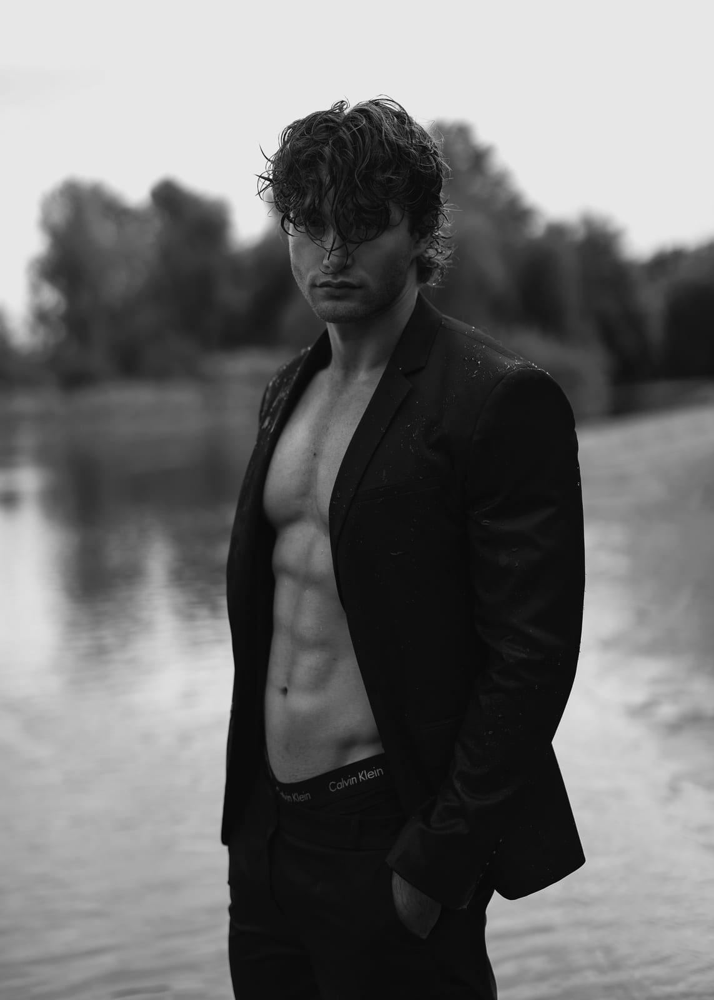
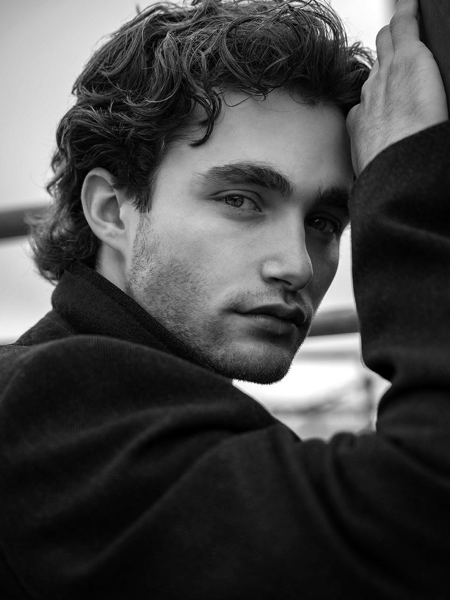
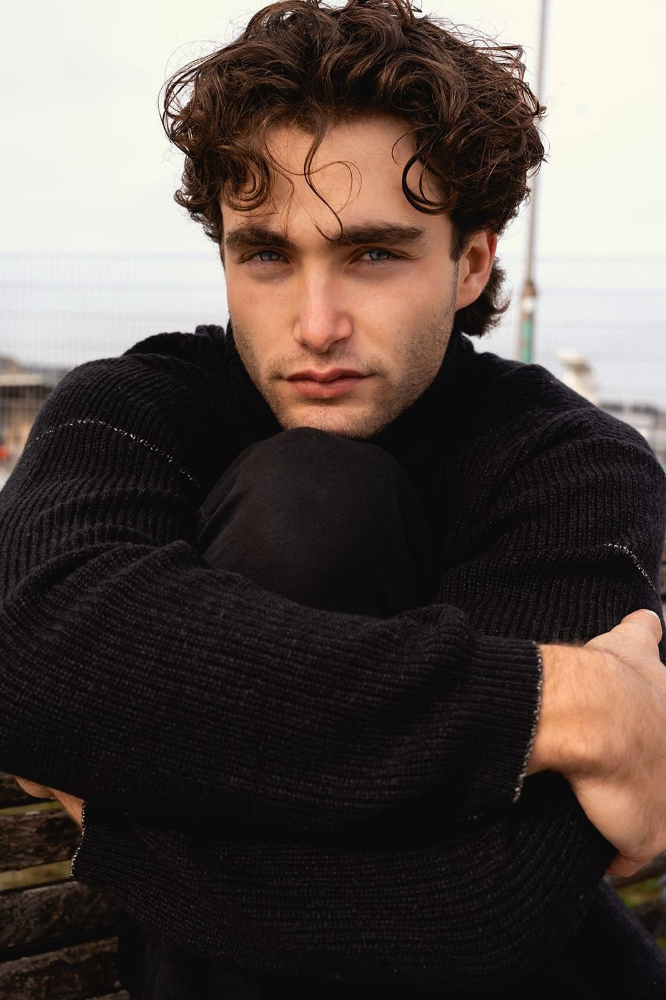
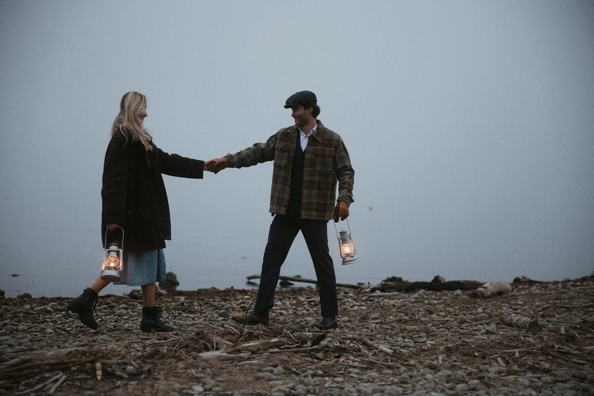
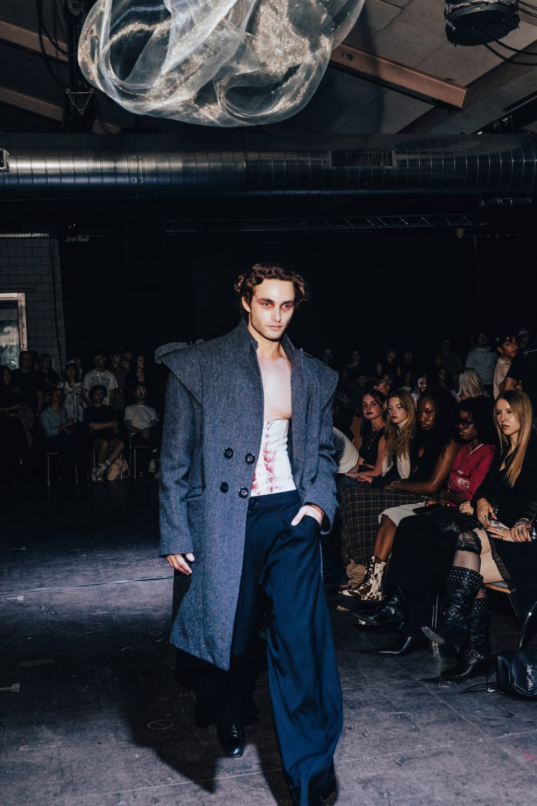

Chapter 01 · Early beginnings
My first encounter with modeling was when I was just under 14 years old, when a dog photographer came to our house to take photos of our three greyhounds at the time, and at my mother's request, he also took some pictures of me. By chance and without any previous experience, the pictures turned out really well and are still immortalized in a book at our house today.
Fast forward five years, and I am 19 years old and standing in front of the camera again with my girlfriend at the time. Originally intended only as a nice memory, the photographer offered me the opportunity to join his small modeling agency. Despite my lack of skincare and little interest in fashion and modeling, they took a liking to me. This never resulted in a shoot or job, but it did significantly boost my confidence in front of the camera.
I arranged another shoot with the same photographer I had worked with at the small agency in order to apply to another agency that I had found out about on social media. This agency charged money to be included in their database and promised all kinds of jobs, but this never led to any work. I got the money back after the contract expired, but by that point I had serious doubts about becoming a model. In summary, neither the best conditions nor the best experiences for getting into this business.

Chapter 02 · The United States, the true beginnings
Fast forward four years and I am in the USA on my exchange semester from university. Since I had taken a break from my job as a consultant in Switzerland and had more time outside of university, I met a female amateur model who lived nearby. She made it her mission to show me the USA and, in addition to my university colleagues, we also spent a lot of time together. Sooner or later, however, it was inevitable that she would take me to modeling events and photo shoots. At these shoots and events, I learned a lot about the business, contracts, TFP (time for prints/photos), job opportunities, agencies, and what to look out for.
As luck would have it, I happened to become more interested in skincare and largely abandoned my bodybuilding ambitions, as I discovered a passion for healthy eating, especially micro nutrients (more on this in the Fitness chapter), and a slimmer, more defined body also gave me advantages in volleyball, calisthenics, and martial arts.
This also resulted in increased self-confidence, and I had generally developed a different self-image during those years. All of this meant that I was able to position myself as a freelance model in the US and occasionally step in front of the camera myself during shoots, gaining even more experience. I had also come a long way in terms of appearance and fashion compared to years before, so I was taken seriously at events.

Chapter 03 · A new hobby or a new dream?
Shortly after returning, I found myself in a small kind of existential crisis. Because I had spent a considerable amount of money in America, which was of course worthwhile since I was able to travel a lot, and because the university there was not particularly demanding, I clearly felt underchallenged. While I was also part of the Students Real Estate Club of the University of St. Gallen during my time in the U.S., I noticed that I had not worked for four months. When I returned, I immediately started again at my previous job, for which I had already done the interview while still in America, and joined a new project.
Another mission, however, was to become a signed model. Although I had gained some experience in the U.S., I approached this process like a complete beginner. My polaroids were not good, and every reputable modeling agency in Switzerland either rejected my application or did not respond at all. Only one agency, my current mother agency Fotogen, gave me a chance because they saw potential in me. This opportunity came with certain conditions. The owner and CEO, Jad, made it clear that I first needed strong professional photos in order to have a chance in such a competitive market.
He offered me a shooting, but I declined and assured him that I would contact him again once I had obtained solid image material. I then began searching for photographers who would be willing to take photos for free with an inexperienced model who had poor model measurements in order to build their portfolio. Yeah, good luck with that.
My approach was simple. I contacted photographers with concrete moodboards and assured them that the images would primarily benefit their portfolio rather than mine. I also made sure never to mention that I actually had very little experience with modeling. I looked at which photographers appeared on the websites and social media channels of major agencies and also checked the photographer who had taken pictures of me in the past to see whether there were others worth contacting. After sending about 25 direct messages and waiting roughly a week, one photographer responded positively, and I had my first shooting.
Suddenly, despite the experience I had gained in America, I became nervous and stiff. I tried to imitate poses I had seen online and was simply not myself. I did not yet have the confidence and maturity that the job required, but everyone starts somewhere. The photographer noticed this and gave me some advice. I assume he also realized that I had not done this very often. Looking back, I was very happy with the photos, but I was genuinely surprised by how little confidence I had at the time. It was probably because I was the center of attention and could not shift the focus onto anyone else, since it was a one-to-one session.

Chapter 04 · Gaining momentum
So, to continue the story. I sent the photos to the agent at Fotogen. He thought a few of them were actually not bad, but it was clear that much more was needed. I posted the photos, started coming up with more unusual ideas, and approached photographers again.
Two more shootings followed, and they already went significantly better and further increased my confidence. I was no longer standing there stiffly, trying to remember certain poses or looks. Instead, I was simply myself. Of course I still tightened my cheekbones and tried to look somewhat cool, but I focused more on mentally placing myself into certain situations and ignoring the camera.
After these three shootings, which still were not enough for the persistent CEO of Fotogen, I arranged a shoot with a photographer from Germany who was already significantly more established. He took much more time for the session, which became my biggest modeling experience up to that point. The shoot was a complete success. After that came a shoot that I will probably remember for the rest of my life: the shoot with Karin Merz.
Karin Merz was, especially in retrospect, a complete lucky punch. Not only is she a very talented and fairly well known photographer in Switzerland, but above all she was willing to commit to a great project with a model who was still very much in the early stage, like me. Spoiler alert: the vibe was incredible. That shoot taught me what truly strong images are, what real collaboration between photographer and model looks like, how a moodboard is translated into a finished project, and how post-production actually works, not simply by copying YouTube tutorials.
Even though it was the middle of September, we both stepped into the Aare, a river in Switzerland, and experimented with many ideas. Everything aligned that day: the vibe, the weather, the clothing, the atmosphere, my hair length, and Karin's energy that day. The results still speak for themselves and, two months later, even brought me to my first small magazine cover and finally into the Fotogen model agency, as Jad was also very impressed.
From that moment on, there was real acceleration. I was no longer approaching photographers like a dog asking for a free shoot. In practice it became the opposite, and the first paid shootings started to appear.
Another opportunity also emerged: a shoot for Migrol that, for my standards at the time, was very well paid. Everything was going in the right direction. This happened even before I had officially signed with Fotogen, because the admission process took longer than expected and my images still had to be uploaded to the agency website.

Chapter 05 · Jad Hayek, a man with a vision
Everyone who looks at my social media and can add two and two together knows that Jad Hayek, CEO of Fotogen, is from now on de facto my agent. I am now a signed model with one of the largest and most established modeling agencies in Switzerland. Fotogen has existed for more than 50 years, and my agent Jad has 32 years of experience as CEO and even longer as a booker. That is the real deal.
It took a moment for that to sink in, and I was extremely happy. The excitement grew even more because, at the same time as signing the contract, a request came in for a lead role in a Galaxus production, which involved a lot more experience and also a significantly higher fee than anything I had done before. At that point, the model life could truly begin.
It all began with my first e-casting for the role. Through it I learned what actually matters and how the industry functions. Some time later the live casting followed. It went very well, but in the end I lost the job to an actor. Nevertheless, I was still able to take on a supporting role and even had a speaking part, which made me very happy. At the same time, I started arranging unpaid shoots with increasingly well known photographers through Instagram. Having the leverage of the agency behind me made a clear difference, and with every shoot I kept learning more.
Very instructive shootings followed. The ones that helped me the most deserve closer explanation and the reasons behind them. The shoot with Britta Bröhl at Lake Constance. Here I learned, similar to the experience with Karin but even more intensely, what true harmony between photographer and model can look like and how strong results can emerge in a short amount of time when preparation is done properly. The current main image on this page (07.03.2026), for example, was also taken by her.
Before the shoot we communicated through chat and voice messages and got to know each other well. The shoot itself took place outdoors. She had prepared a clear shooting route and location plan. We had a packing and shopping list and even a dedicated playlist designed to guide the emotional atmosphere during the shoot.
This was the first time I completely let go. I dropped every form of hesitation. At one point I was standing outside shirtless in freezing cold with strangers around, acting in one moment as if the world was ending and in the next as if I was about to kill someone. It became one of the most emotional shoots I have experienced so far.
Again, as with Karin, everything aligned. The atmosphere, the preparation, the energy on set. It is not surprising that the two photographers know each other to some extent. I do not fully know why, but with female photographers I learned an incredible amount. It often felt as if I could see through the camera and directly into the eyes of the person behind it. At that time I also felt extremely comfortable in front of the camera.

Chapter 06 · The boundaries of creativity
The next shoot worth explaining in more detail was the one with Chris Widmer. Here as well the focus was on real emotions, but the approach was very different from the one with Britta Bröhl. The shoot with Chris and his girlfriend Alina was by far one of my longest shoots, and again I learned a great deal. What made it special was that I participated together with my girlfriend at the time, who was still about to become my girlfriend, and the project turned into an in-depth couple shoot.
This experience created another strong learning moment. Chris did not only push me to be myself but also to experiment and step outside my comfort zone. The goal was to perform very unusual movements and to completely drop any sense of embarrassment. In the end we filmed a romantic closing video at the lake, wearing retro outfits, which completed the entire project.
Through this shoot I realized more clearly that changing emotions alone is not enough; the physical expression of those emotions is equally important. Before that point my emotional shifts were mostly visible through small changes in head position, eye expression, or the movement of my hair. With Chris the focus was on activating the entire body with the emotion.
I also learned that images can be blurred and still look powerful. Creativity has no clear boundaries. It shows how versatile this work can be and also reveals that many typical fashion campaign or e-commerce jobs are relatively routine, while more demanding and creative work often happens in personal projects such as editorials.
After several shoots like these I also developed my first real understanding of lighting conditions, camera work, and image processing tools such as Capture One. These elements play a crucial role in the final composition of an image.
Chris also gave me an extremely important piece of advice over dinner after the shoot, particularly regarding how to approach the industry in order to receive more jobs and strengthen my position within the community. Only the best is good enough. Only the very best photos deserve to be posted, because posting reflects a quality standard. Accept only shoots that clearly improve your portfolio, and give yourself more credit. You already have experience and have completed several smaller jobs.
That insight mattered. From that moment on I deleted many posts, restructured my Instagram, and fundamentally changed my online presence.
The next shoot worth mentioning was with Thomas Kopp. In terms of location and moodboard the shoot itself was not particularly unusual, but I had heard many positive things about him and knew that it would be a good opportunity to apply what I had learned so far.
The main learning moment there was understanding how much confidence alone can shape an image. Confidence can make many things look good. It was also another exercise in stepping further outside the comfort zone. I laughed a lot, at that point I had become almost professional at producing convincing laughter, and I played a lot with my hair and clothing.
Thomas created an exceptional atmosphere and lighting setup, which made several of those photos some of my all-time favorites. He also showed how quickly someone can feel comfortable during a shoot. His attention to detail stood out. He had heavily rebuilt his own studio, prepared a strong playlist, and treated me with such warmth that the shoot could almost only turn out well.
He was also another important figure to talk to. As the agency photographer for Biba Models, he had insight into the broader agency landscape. Conversations like these helped me understand what is happening at other agencies and stay informed about the industry.

Chapter 07 · The price of standing out (and the strategy behind it)
Modeling for fun is enjoyable, but at some point the question naturally appeared: what is the business case behind it, as a business student would put it? How does one actually reach the large deals that constantly appear on social media?
By coincidence I came across a social media casting call that led to a somewhat larger skincare job with Edgar Hernandez, followed by an unplanned TFP shoot afterwards. During this project the topic of becoming successful and securing well paid jobs came up for the first time. I learned a great deal again and began applying it more deliberately. The details are difficult to explain briefly and depend heavily on individual situations, which is why they are better discussed in a dedicated coaching setting.
Further valuable insights came during the Galaxus shoot, and many of the principles started to work well in practice. Having Jad look for jobs on my behalf was important, but patience was never my strongest trait. I wanted to understand what I could do myself: how to attract more inbound opportunities and possibly also generate outbound ones.
Working with Hernandez also showed me how to behave properly on commercial productions and what actually matters in those environments. Another important lesson was curiosity. Speaking with people on set often reveals small but valuable insights, and every conversation can add something new to the learning process.
Another thing also became clear to me: I needed more agencies.
I also realized how crucial social media is. High traffic, engagement, likes, and comments can carry real value. This naturally raised the question of how to grow on social media and in which direction the personal brand should evolve. In that process my business partner Bada Cichon played an important role, whom I explain in more detail in the section titled “Entrepreneurship.”

Chapter 08 · Playing in the big leagues (or that's the goal)
So, dear Mr. Fotogen CEO, how do I actually break through now? The answer is more complicated than it might appear. Looking more closely at the industry, one quickly sees endless lines at castings, extremely slim men, and countless models already signed with agencies.
Fortunately, Jad is very well connected. He managed quite quickly to place me with Talents Models in Munich, which at the time wanted to expand its men's division and saw potential in someone like me. The process was straightforward and they regularly send inquiries.
That was only the beginning. At the beginning of February, after discussing it with Jad, I went to Milan and signed with Models Milano, which I was very pleased about. Fortunately, I had brought my old school model book with me, not only my sedcard, which turned out to be a good decision.
The details of the Milan trip are not necessary here, but one thing became clear. Measurements cannot be compensated for with good posing or charisma. If the clothes do not fit, they simply do not fit. This mainly applies to fashion campaigns.
The gap was small, but my chest measurement was slightly too large. The issue itself is manageable. Losing three to four kilograms and reducing water retention solves it. It was necessary to remain competitive for larger brands and to avoid limiting opportunities for Milan or Paris Fashion Week.
At the same time, my own approach to securing well paid jobs outside the agency system with limited image rights worked very well. This also helped strengthen my credibility. I was able to participate in a larger shoe campaign for Botty, a brand with many locations across Switzerland, which became one of my few fashion campaigns so far.
At the moment discussions are ongoing with agencies in Paris to place me there strategically as well. Since the university semester has started again, I do significantly fewer TFP shoots. If I do them, then only with photographers who are personally convincing or whose work clearly strengthens my portfolio. An example is shown below.
Modeling has become something I genuinely enjoy and a real passion has developed. Where the professional path leads from here remains open.

Chapter 09 · Becoming great as a team
After a long period of persuasion, my girlfriend eventually decided to also join Fotogen. She had already done several jobs and many photoshoots before, but mostly for fun. Now she wants to professionalize it more seriously. The image below is, so far, one of my all time favorites.
We had already done a few shoots together before, but representation through Fotogen now opens the door to larger wedding shoots and other couple based projects. Quite a lot is currently in motion. At the same time I decided to build this website and start offering paid modeling consulting.
The reason is simple. I receive questions almost every week about how everything started and how it is possible to earn money through modeling in a similar way. I have also already planned several projects and signed a few agreements.
Not every detail is shared here. Many aspects remain open, for example how I secured jobs outside the agency system, how appearance can be improved, how to handle posting and behavior in front of the camera and with other people, how to shape the body and face, or how contracts are negotiated. Explaining everything would go far beyond the scope of what has already become something close to a small autobiography. Much of it also cannot be generalized and must be examined individually. This is exactly what the coaching sessions are for.
I am curious to see where the journey leads, but it is incredibly enjoyable. Sharing this life with my girlfriend also creates unforgettable memories.
Chapter 10 · Jobs, jobs and more jobs
Over time I have settled deeply into the whole scene and taken on a great many jobs in Switzerland, many of which you can find across this website. They range from runway shows to video commercials, and there have been a fair number of fashion jobs as well. I was also able to secure another agency, New Generation in Amsterdam.
There was, however, a larger setback. When I spoke with my agent in Milan, he told me that I am roughly twenty kilograms too heavy for runway in Milan, Paris, London and comparable markets. I had not been aware of this. I thought I was only slightly over the measurements, so it hit me hard.
Even so, I am not giving up on this dream. Instead I am trying to earn my way in through recognition and through the other fashion shows I walk in Switzerland, where the measurements are taken less strictly, and to open the door to Milan and Paris that way, without having to lose so many kilograms. I spent years doing bodybuilding and already sit at a very low body fat. Losing that much muscle would be a waste and, in my view, would hurt my overall look. Since I pursue modeling only as a side activity and do not place all my cards on it, I have decided not to change my body so drastically just to attempt that route.
Other setbacks have happened too. A Vogue shoot, for example, was cancelled at the very last second, and I have run into problems with contracts where people tried to take advantage of me. You could call that the shadow side of the industry.
Nonetheless, I enjoy it immensely. I have been able to realize a great deal together with my girlfriend, who also models and whom you will often see here, and I have landed many exciting jobs for large Swiss brands.
Lately I have noticed that acting is an enormous advantage for big advertising campaigns, which is why I have applied for several supporting roles in smaller films. I am still waiting to hear back, and it makes all of this more enjoyable than ever.
At the same time, my time management is worse than ever. I have started working at Growis, which is very time-intensive, and combined with my studies, my job at the insurance company, modeling and sport it has taken a real toll on my schedule. As a result I have to be more selective about which modeling jobs I accept, and I do not always have time, which has already led to the occasional conflict. That does not bother me, though, because I still get to do what I love.
On top of that, I have expanded my social media presence with modeling videos, personal real talk, get-ready clips and a few critical business memes, in order to become better known and to carry my dream a little further.